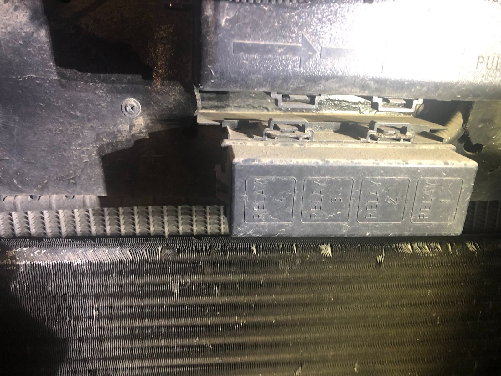
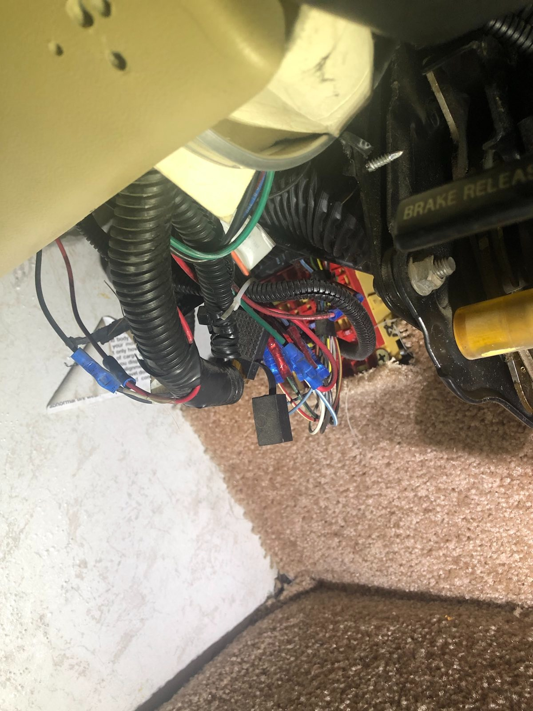
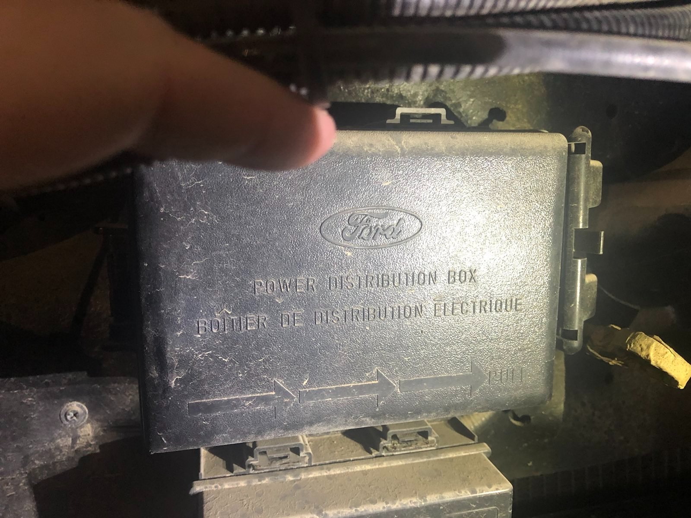

Resource for troubleshooting electrical
The Missing Breaker Panel
The electrical in a Motorhome is not the same standard and code that a residential home is. Some times there isn't a breaker panel with most of the motor homes. Some of the higher end ones do have them but most don't. Mine does not and so finding the main electrical is proved to be somewhat difficult. To start off let's think about what we have to work with. We essentially have 30 amps to work with total. A normal house has 100 or 200 or more for amps to work with as a comparison. Our electrical distribution box is in the Engine compartment in the upper driver side section. The picture to the right shows where in the engine bay we are talking about. It is not exactly easy to work on the electrical system for this motorhome.
Diagram of the electrical system
To the left is a diagram of the electrical circuits and how the system is built and designed. We will need this to isolate circuits. We will also need this to see the 12v circuit's and the 120v ac circuit's. With the 120v ac circuit's only running when shore power is connected or the generator is running to provide the power.
Possible Upgrades
Replace the house batteries with Battleborn lithium batteries. This may seem like a large upfront cost but the weight per watt is so much better than the lead acid batteries. You also get more consistent voltage and output. Over all they last Longer as well. One of the best upgrades you can make. Adding Solar is another option to consider but keep in mind if you add rigid heavy panel's. Your weight you can have for other things is reduced. A flexible light solar array may be a good option here. upgrade the main power battery rocker switches with regular on-off switches with better isolation relays than what is provided by the factory. This will reduce parasitic draw from systems not in use. Another thing to do is replace all interior lights with LED lights.
